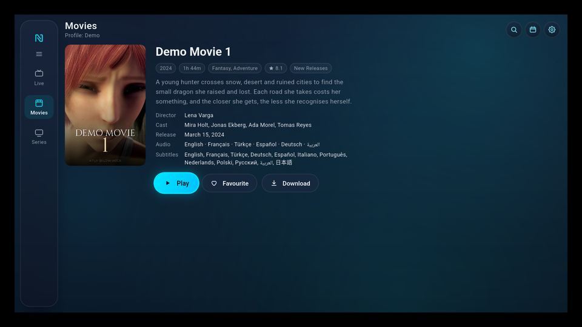

NitaTVReproductor IPTV para Android TV, tablet y celular
NitaTV reproduce las transmisiones del proveedor que tú contratas, o tu lista M3U: TV en vivo con su guía de programación, grabación, películas y series.
Un mes de prueba gratis, sin tarjeta de crédito.

TV en vivo 
La guía de programación 
Películas y series 
La ficha de una película 
Audio y subtítulos 
Programar una grabación 
En el celular
Las capturas de pantalla muestran una fuente de demostración: todos los nombres, imágenes y guías son ficticios.
Video de demostración: “Sintel” © Blender Foundation, CC BY 3.0 (durian.blender.org).
⚠ NitaTV no ofrece canales, películas ni contenido de ningún tipo, y no vende ni recomienda ningún proveedor. Necesitas tu propia suscripción con un proveedor, o una lista de reproducción.
Qué hace NitaTV
- Inicia sesión con un enlace de lista M3U o con las credenciales de tu proveedor
- Agrega tu lista desde el celular escaneando un código QR
- TV en vivo con guía de programación
- Películas y series, retomando donde las dejaste
- Graba un programa, al instante o programado desde la guía
- Descarga películas y episodios para verlos sin conexión
- Transmite a un dispositivo Chromecast
- Elige la pista de audio y los subtítulos
- Varios perfiles, favoritos y búsqueda
- Imagen en imagen
- Disponible en 21 idiomas
Preguntas frecuentes
¿NitaTV ofrece canales?
No. NitaTV es un reproductor: reproduce lo que te da tu proveedor. No contiene canales ni recomienda ningún proveedor.
¿Qué necesito?
Un enlace de lista M3U, o las credenciales que te dio tu proveedor. Puedes escribirlas en la TV o enviarlas desde el celular escaneando un código QR.
¿En qué dispositivos?
Android TV y Google TV, tablets y celulares Android. Desde un celular o una tablet, también puedes transmitir a un Chromecast.
¿Cuánto cuesta?
Un mes de prueba gratis, sin tarjeta de crédito, uno por cuenta de Google. Después, una suscripción anual, que puedes cancelar cuando quieras desde Google Play.
¿Qué pasa con mis credenciales?
Tus credenciales se quedan en tu dispositivo, en una bóveda cifrada. Si las envías desde el celular con un código QR, van cifradas de extremo a extremo: nuestro servidor no puede leerlas. NitaTV no contiene anuncios ni rastreadores.